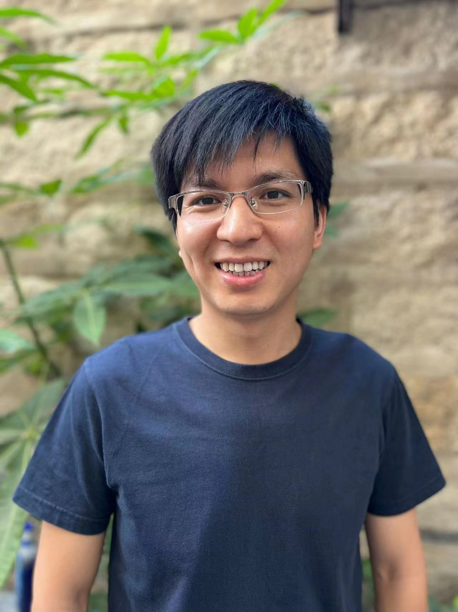

Shaoyun Yi
(易少云)
Xiamen University
School of Mathematical Sciences
Xiamen, Fujian 361005, China
E-mail: yishaoyun926@xmu.edu.cn
Office: B515
Welcome! I am a tenure-track Assistant Professor at Xiamen University. Here is my CV.
Research Interests
Number Theory & Representation Theory & Dynamical Systems
- Automorphic Forms and Representations, $L$-functions. See [1], [2], [3], [5], [7], [9], [10], [13], [21].
- Analytic Number Theory and Ergodic Theory. See [4], [6], [8], [15], [16], [17], [18], [19].
- Algebraic and Combinatorial Number Theory. See [11], [12], [14], [22].
- Lattice Theory and Quadratic Forms. See [20].
Publications and Preprints
-
On the moduli of distinct covering systems
(with Xiangjun Dai,
Huixi Li
and Junfeng Li).
Submitted, 2026. [arXiv]. -
When GL(2) cusp forms meet CM points in GSp(4)
(with
Shenghao Hua).
Submitted, 2026. [arXiv]. -
The Borisov--Nuer conjecture and root decompositions
in even unimodular Lorentzian lattices
(with
Haowu Wang).
Submitted, 2026. [arXiv]. -
Averaged dynamical generalizations of Chowla's conjecture
(with
Biao Wang).
Submitted, 2026. [arXiv]. -
Dynamical generalizations of the two-point Chowla conjecture
(with
Biao Wang).
Submitted, 2026. [arXiv]. -
Asymptotic uncorrelations between functions with squarefull
kernel and functions of invariant average
(with Xiang Su and
Biao Wang).
Submitted, 2026. [arXiv]. -
The prime number theorem over integers of power-free
polynomial values
(with
Biao Wang).
Journal of Number Theory 283 (2026), 216-229. [arXiv, DOI]. -
Some ergodic theorems over squarefree numbers and
squarefull numbers
(with
Huixi Li,
Biao Wang
and
Chunlin Wang).
Acta Arithmetica 221 (2025), no. 2, 117-140. [arXiv, DOI]. -
On Erdős covering systems in global function fields
(with
Huixi Li,
Biao Wang
and
Chunlin Wang).
Journal of Number Theory 266 (2025), 269-280. [arXiv, DOI]. -
Some remarks on strong multiplicity one for paramodular
forms
(with
Xiyuan Wang,
Zhining Wei
and
Pan Yan).
Mathematika 72 (2026), no. 2, Paper No. e70098, 32 pp. [arXiv, DOI]. -
On Covering Systems of Polynomial Rings over Finite Fields
(with
Huixi Li,
Biao Wang
and
Chunlin Wang).
Proceedings of the American Mathematical Society 152 (2024), no. 9, 3731-3742. [arXiv, DOI]. -
On the minimum modulus problem in number fields
(with
Huixi Li
and
Biao Wang).
Submitted, 2023. [arXiv]. -
On distinguishing Siegel cusp forms of degree two
(with
Zhining Wei).
International Journal of Number Theory 22 (2026), no. 8, 1707-1723. [arXiv, DOI]. -
Dimension formulas for Siegel modular forms of level 4
(with
Manami Roy
and
Ralf Schmidt,
and with an appendix by
Cris Poor
and
David Yuen).
Mathematika 69 (2023), no. 3, 795-840. [arXiv, DOI]. -
Generalizations of the Erdős-Kac Theorem and
the Prime Number Theorem
(with
Biao Wang,
Zhining Wei
and
Pan Yan).
Communications in Mathematics and Statistics 13 (2025), no. 5, 1177-1197. [arXiv, DOI]. -
Classical and adelic Eisenstein series
(with
Manami Roy
and
Ralf Schmidt).
Rocky Mountain Journal of Mathematics 56 (2026), no. 3, 817-852. [arXiv, DOI]. -
Generalizations of Alladi's formula for arithmetical
semigroups
(with
Lian Duan
and
Ning Ma).
The Ramanujan Journal 58 (2022), no. 4, 1285-1319. [arXiv, DOI]. -
Congruences for dimensions of spaces of Siegel cusp forms
and 4-core partitions
(with
Chiranjit Ray
and
Manami Roy).
The Ramanujan Journal 58 (2022), no. 4, 1011-1023. [SharedIt link, arXiv, DOI]. -
Analogues of Alladi's formula over global function fields
(with
Lian Duan
and
Biao Wang).
Finite Fields and Their Applications 74 (2021), 101874, 26 pp. [arXiv, DOI]. -
On counting cuspidal automorphic representations for GSp(4)
(with
Manami Roy
and
Ralf Schmidt).
Forum Mathematicum 33 (2021), no. 3, 821-843. [arXiv, DOI]. -
Klingen $\mathfrak{p}^2$ vectors for GSp(4).
The Ramanujan Journal 54 (2021), no. 3, 511-554. [SharedIt link, DOI]. -
Klingen vectors of level 2 for GSp(4).
Ph.D. Thesis, University of Oklahoma, 2019. [PDF].
Useful Math Links
- DLMF LMFDB GSp4.org Siegel Modular Forms of Degree 2 and 3 Siegel Modular Forms Computation Pages
- Number Theory in arXiv Automorphic Forms Online References on Kimball Martin's Page MathSciNet Mathematics Genealogy Project
- Number Theory Conferences researchseminars.org International Seminar on Automorphic Forms Kiran S. Kedlaya's Conference Page in Arithmetic Geometry MathMeetings.net
- AFW (Automorphic Forms Workshop) Arizona Winter School MSRI Programs ICERM Programs
- TORA (Texas-Oklahoma Representations and Automorphic forms) Midwest Representation Theory Conference PANTS (Palmetto Number Theory Series)